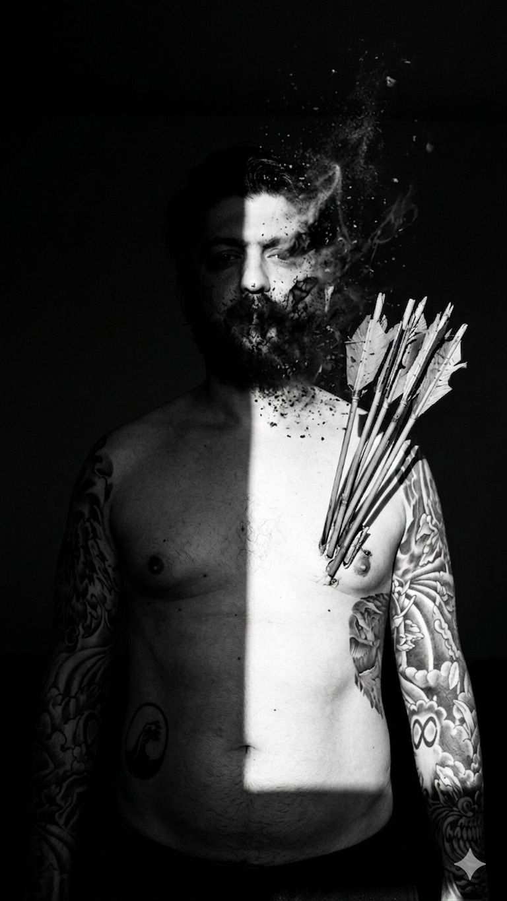

Sounds
of
Distortion
01 / Proceso
Distorsión brutalista.



02 / Materialidad
Honestidad del material digital.
03 / Erosión
Degradación
Controlada.
La perfección es un error de cálculo. Buscamos la belleza en los artefactos de compresión y el ruido térmico.

SYSTEM FAILURE — SYSTEM ERROR — LOST SIGNAL —
SYSTEM FAILURE — SYSTEM ERROR — LOST SIGNAL —
05 / Transmisión